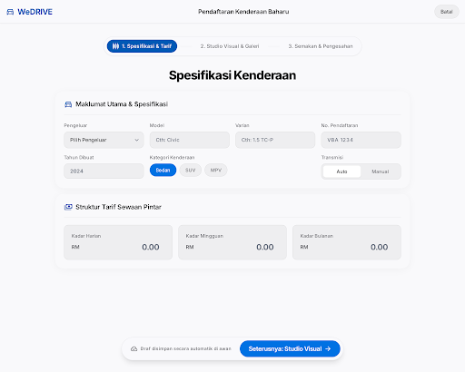
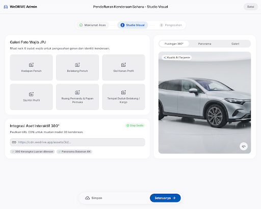

Ujian perbandingan 100% kod mentah Google Stitch MCP menggunakan model yang sama (GEMINI_3_8_FLASH) untuk melihat impak 5 Precision Patches.
Prompt generasi awal yang memfokuskan visual Bento Grid dan responsif umum.

Disuntik dengan prinsip Focused Wizard, Restrained Glassmorphism, 4-Metric Grid, dan 6-Slot JPJ Photo Studio.

Memperbetulkan arahan dari 3 kolum kepada susun atur seimbang (2x2 / 4-kolum) supaya medan Deposit Keselamatan tidak terasing.
Memastikan ruang bawah mencukupi supaya bar tindakan terapung tidak melindungi butang borang di iPhone.
Kesan kaca hanya pada pengepala & dock; kad borang kekal legap untuk keterbacaan teks optimum.
Menentukan secara eksplisit bila 2 kolum perlu diadaptasi dan bila perlu bertukar kepada satu kolum menegak.
1440px, 820px, dan 393px berfungsi sebagai piawaian rujukan, dengan penskalaan cecair merentas semua saiz.